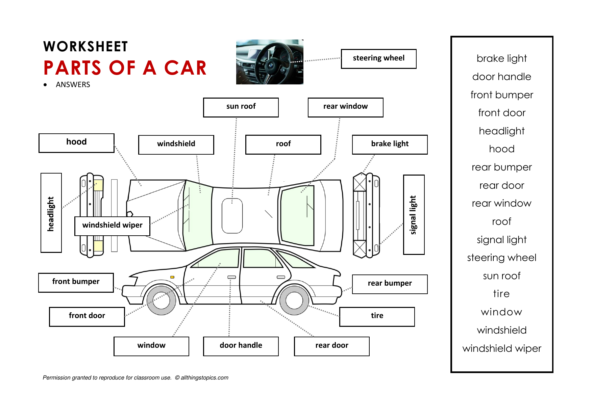
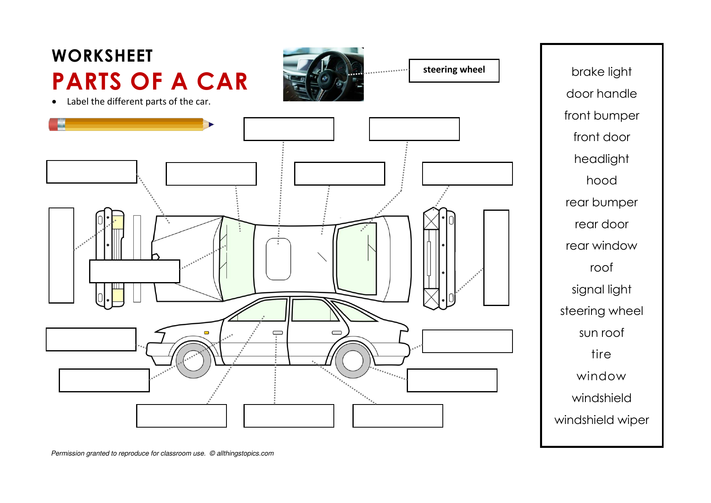

DRIVING (allthingstopics)
Speaking Practice: DRIVING
First: do the quiz then check your answers
Drag the items to the correct blank spaces (the correct answers will appear once you drag the last item)
Second: study the Parts of a Car
Give your opinions about driving.
Each question must be answered by at least five students.
Listen to the different opinions of your classmates.
Debate with your classmates.
Give reasons why you agree or disagree with them.
Parts of a Car (Memorize)

Parts of a Car (Label)

Do you know how to drive? If ‘yes’, when did you learn? When did you get your license?
Do you think driving is fun? Why? / Why not?
Are women better drivers than men? Why? / Why not?
What is the best age to learn how to drive?
Do you think the driving age should be lowered? Why? / Why not?
Do you always use a seatbelt? Why? / Why not?
Do you think cars are a safe way to travel? Why? / Why not?
What is your favorite kind of car? Describe it.
What are three good things about driving a car?
What are three bad things about driving a car?
Compare driving and riding a motorcycle.
What is a ‘traffic jam’? What causes traffic jams?
How will cars be different 100 years in the future?
Do you think robotic ‘self-driving’ cars are a good idea? Why? / Why not?
←
→
/
#